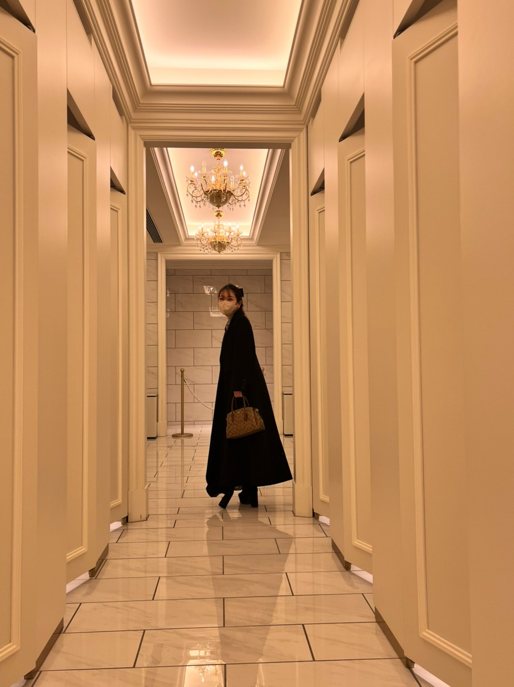

PROFILE

百貨店で販売促進・SNSや催事の運営など幅広く携わりながら、Webデザインの勉強をしていました。
本格的に勉強と転職活動をしたいと思い、2024年3月に退職をし、現在に至ります。
趣味はファッション、漫画、アニメ、通販サイトを見ること。
接客の経験を活かしたヒアリングとコミュニケーション力で、お客様が求めるものを一緒に作り上げれ
るデザイナーになりたいです。
また、将来的にWebデザインだけでなく、アプリ開発などにも携わっていきたいと思っています。
SKILL
-
HTML
CSSVisual studio codeを使ってデザインをパーフェクトピクセルで再現できます。また、レスポンシブの対応もできます。
-
Java
ScriptjQueryを主に使用してサイトに動きを加えることができます
-
Figma
Webサイトデザインを作成できます
-
Photo
shopWebサイトのデザインやコーディングの情報取得で利用しました。今後はバナー作成もできるように学ぶ予定です。
-
PHP
WebサイトをWordPress化するのを学んでいる途中です。